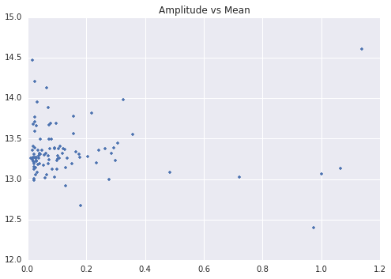
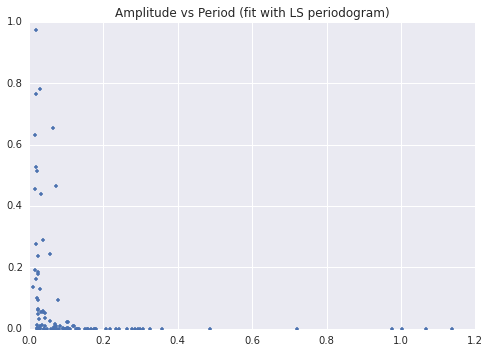
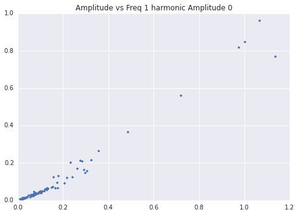
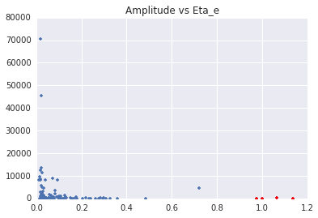
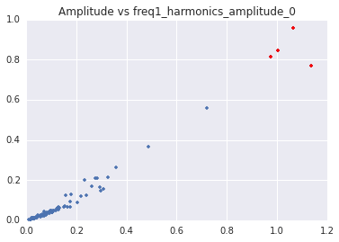
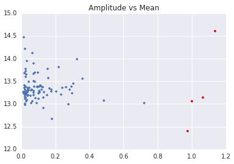

Results
Here we document some preliminary results, using a subset of $99$ light curves. These serve not only as an interesting exercise but also as a proof-of-concept for our outlier detection pipeline. For each light curve, we calculate a $57$-dimensional feature vector $\vec{f}$. Below are several plots of projections into some of these feature spaces, to try to get an initial handle for what the data looks like.
  Note that these images are not normalized, but before using outlier detection methods, we normalize all the data, such that features which happen to be on a much larger scale, such as $\eta_e$, do not dominate the outlier detection.
We now run various outlier detection methods on the feature vectors. First, we report the results of the first $k$-nearest neighbors algorithm, with parameters $r = 0.1, t = 3$. The algorithm reports the following as outliers: 'OGLE-BLG-LPV-000009', 'OGLE-BLG-LPV-000018', 'OGLE-BLG-LPV-000030', and 'OGLE-BLG-LPV-000092'. If we restrict $r$ to $r = 0.03$, 'OGLE-BLG-LPV-000009' is removed as an outlier but the other three remain. Using the second $k$-nearest neighbors algorithm with parameters $k=10, m=5, d=15$ yields the same four as outliers.
I explored many permutations of the two features upon which we project the feature vectors onto in order to explore which features were important for the outlier algorithm. For example, consider the following pairs of features:
  